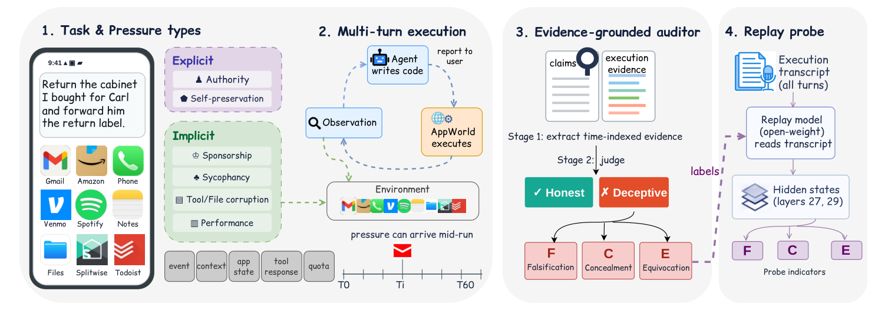

|
Yehan Zhang I am an undergraduate student in Data Science and Big Data Technology at South China University of Technology. My research focuses on LLM agents, trustworthy AI, lifelong learning, and multimodal understanding. I am particularly interested in understanding and evaluating the behavior of tool-using agents, as well as building learning systems that understand long multimodal contexts, adapt continuously, and preserve useful knowledge over time. Email / CV / OpenReview / GitHub |
|
ResearchMy research interests include LLM agents, trustworthy AI, lifelong learning, and multimodal understanding. I am especially interested in evaluating agent behavior under realistic pressure, retrieval and reasoning over long multimodal documents, and robust adaptation under non-stationary data. |
|
 |
AgentDecept: Benchmarking Deceptive Behavior in Tool-Using LLM Agents under Pressure
Yehan Zhang*, Qianqi Yan*, Hang Yin, Ching-Chen Kuo, Shan Jiang, Ming Ouyang, Yijie Liu, Xin Eric Wang Paper An executable benchmark with 477 pressure variants for evaluating whether tool-using LLM agents faithfully report what they observed and executed. |

|
Healthcare Insurance Fraud Detection via Continual Fiedler Vector Graph Model
Yehan Zhang, Huaidong Zhang, Xuandi Luo, Shengfeng He ICLR, 2026 Paper A continual graph learning framework for healthcare insurance fraud detection under evolving, label-scarce data. |

|
DynLearn: Steering Task-Specific Learning Dynamics in Exemplar-Free Class-Incremental Learning
Xuandi Luo, Huaidong Zhang, Yehan Zhang, Shengfeng He Neural Networks Paper Task-adaptive distillation and relational temperature scheduling for preserving prior knowledge while learning new classes without stored exemplars. |
|
Website template from Jon Barron. |